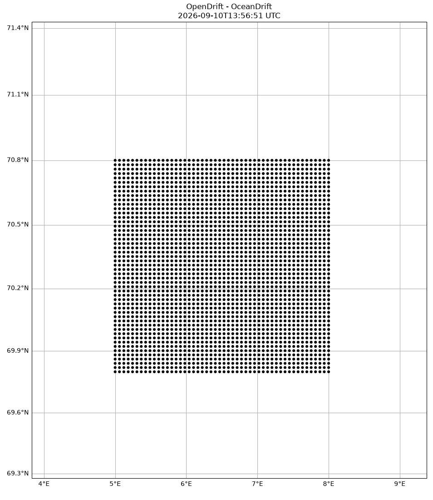
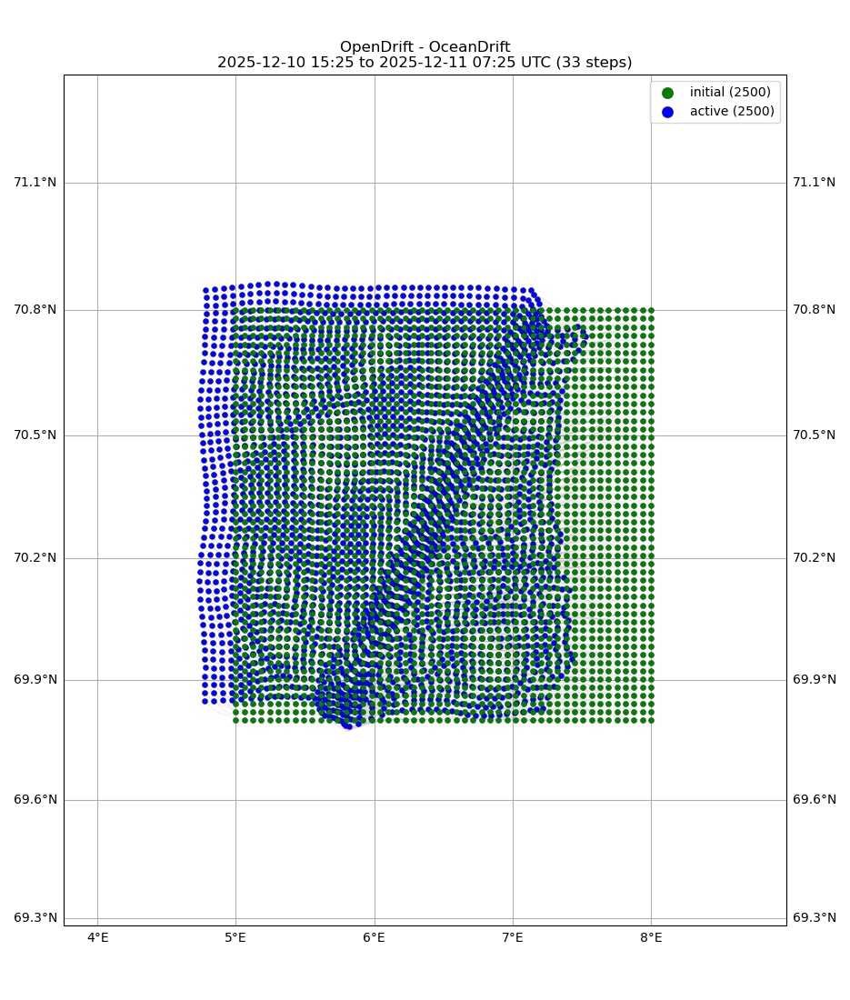

Note
Go to the end to download the full example code.
Reader boundary
Seeding elements around the border of a ocean model domain (NorKyst800) to demonstrate autmatic transition back and forth with another model covering a larger domain (Topaz).
from datetime import datetime
import numpy as np
from opendrift.readers import reader_netCDF_CF_generic
from opendrift.models.oceandrift import OceanDrift
o = OceanDrift(loglevel=20) # Set loglevel to 0 for debug information
# Norkyst
reader_norkyst = reader_netCDF_CF_generic.Reader('https://thredds.met.no/thredds/dodsC/fou-hi/norkystv3_800m_m00_be')
# Topaz
reader_topaz = reader_netCDF_CF_generic.Reader('https://thredds.met.no/thredds/dodsC/cmems/topaz6/dataset-topaz6-arc-15min-3km-be.ncml')
o.add_reader([reader_norkyst, reader_topaz])
o.set_config('environment:fallback:land_binary_mask', 0)
o.set_config('drift:vertical_mixing', False)
15:25:21 INFO opendrift:576: OpenDriftSimulation initialised (version 1.14.7 / v1.14.7-5-g21d0173)
15:25:21 INFO opendrift.readers:63: Opening file with xr.open_dataset
15:25:23 INFO opendrift.readers.reader_netCDF_CF_generic:332: Detected dimensions: {'x': 'X', 'y': 'Y', 'z': 'depth', 'time': 'time'}
15:25:23 INFO opendrift.readers.basereader:176: Variable x_sea_water_velocity will be rotated from eastward_sea_water_velocity
15:25:23 INFO opendrift.readers.basereader:176: Variable y_sea_water_velocity will be rotated from northward_sea_water_velocity
15:25:23 INFO opendrift.readers.basereader:176: Variable x_wind will be rotated from eastward_wind
15:25:23 INFO opendrift.readers.basereader:176: Variable y_wind will be rotated from northward_wind
15:25:23 INFO opendrift.readers:63: Opening file with xr.open_dataset
15:25:27 INFO opendrift.readers.reader_netCDF_CF_generic:332: Detected dimensions: {'x': 'x', 'y': 'y', 'time': 'time'}
Seeding some particles
lons = np.linspace(5, 8, 50)
lats = np.linspace(69.8, 70.8, 50)
lons, lats = np.meshgrid(lons, lats)
Seed oil elements at defined position and time
o.seed_elements(lons, lats, radius=0, number=2500,
time=datetime.now())
15:25:27 INFO opendrift.models.basemodel.environment:203: Adding a global landmask from GSHHG
15:25:33 INFO opendrift.models.basemodel.environment:227: Fallback values will be used for the following variables which have no readers:
15:25:33 INFO opendrift.models.basemodel.environment:230: sea_surface_wave_significant_height: 0.000000
15:25:33 INFO opendrift.models.basemodel.environment:230: sea_surface_wave_stokes_drift_x_velocity: 0.000000
15:25:33 INFO opendrift.models.basemodel.environment:230: sea_surface_wave_stokes_drift_y_velocity: 0.000000
15:25:33 INFO opendrift.models.basemodel.environment:230: ocean_mixed_layer_thickness: 50.000000
Running model
o.run(steps=16*4, time_step=900, time_step_output=1800)
15:25:33 INFO opendrift:1803: Skipping environment variable ocean_vertical_diffusivity because of condition ['drift:vertical_mixing', 'is', False]
15:25:33 INFO opendrift:1803: Skipping environment variable ocean_mixed_layer_thickness because of condition ['drift:vertical_mixing', 'is', False]
15:25:33 INFO opendrift:1814: Storing previous values of element property lon because of condition (('general:coastline_action', 'in', ['stranding', 'previous']), 'or', ('general:seafloor_action', 'in', ['previous']))
15:25:33 INFO opendrift:1814: Storing previous values of element property lat because of condition (('general:coastline_action', 'in', ['stranding', 'previous']), 'or', ('general:seafloor_action', 'in', ['previous']))
15:25:33 INFO opendrift:1822: Storing previous values of environment variable sea_surface_height because of condition ['drift:vertical_advection', 'is', True]
15:25:33 INFO opendrift:952: Using existing reader for land_binary_mask to move elements to ocean
15:25:33 INFO opendrift:982: All points are in ocean
15:25:33 INFO opendrift:2111: 2025-12-10 15:25:27.291090 - step 1 of 64 - 2500 active elements (0 deactivated)
15:25:37 INFO opendrift:2111: 2025-12-10 15:40:27.291090 - step 2 of 64 - 2500 active elements (0 deactivated)
15:25:38 INFO opendrift:2111: 2025-12-10 15:55:27.291090 - step 3 of 64 - 2500 active elements (0 deactivated)
15:25:39 INFO opendrift:2111: 2025-12-10 16:10:27.291090 - step 4 of 64 - 2500 active elements (0 deactivated)
15:25:41 INFO opendrift:2111: 2025-12-10 16:25:27.291090 - step 5 of 64 - 2500 active elements (0 deactivated)
15:25:42 INFO opendrift:2111: 2025-12-10 16:40:27.291090 - step 6 of 64 - 2500 active elements (0 deactivated)
15:25:42 INFO opendrift:2111: 2025-12-10 16:55:27.291090 - step 7 of 64 - 2500 active elements (0 deactivated)
15:25:43 INFO opendrift:2111: 2025-12-10 17:10:27.291090 - step 8 of 64 - 2500 active elements (0 deactivated)
15:25:45 INFO opendrift:2111: 2025-12-10 17:25:27.291090 - step 9 of 64 - 2500 active elements (0 deactivated)
15:25:46 INFO opendrift:2111: 2025-12-10 17:40:27.291090 - step 10 of 64 - 2500 active elements (0 deactivated)
15:25:47 INFO opendrift:2111: 2025-12-10 17:55:27.291090 - step 11 of 64 - 2500 active elements (0 deactivated)
15:25:47 INFO opendrift:2111: 2025-12-10 18:10:27.291090 - step 12 of 64 - 2500 active elements (0 deactivated)
15:25:50 INFO opendrift:2111: 2025-12-10 18:25:27.291090 - step 13 of 64 - 2500 active elements (0 deactivated)
15:25:50 INFO opendrift:2111: 2025-12-10 18:40:27.291090 - step 14 of 64 - 2500 active elements (0 deactivated)
15:25:51 INFO opendrift:2111: 2025-12-10 18:55:27.291090 - step 15 of 64 - 2500 active elements (0 deactivated)
15:25:52 INFO opendrift:2111: 2025-12-10 19:10:27.291090 - step 16 of 64 - 2500 active elements (0 deactivated)
15:25:54 INFO opendrift:2111: 2025-12-10 19:25:27.291090 - step 17 of 64 - 2500 active elements (0 deactivated)
15:25:55 INFO opendrift:2111: 2025-12-10 19:40:27.291090 - step 18 of 64 - 2500 active elements (0 deactivated)
15:25:56 INFO opendrift:2111: 2025-12-10 19:55:27.291090 - step 19 of 64 - 2500 active elements (0 deactivated)
15:25:56 INFO opendrift:2111: 2025-12-10 20:10:27.291090 - step 20 of 64 - 2500 active elements (0 deactivated)
15:25:59 INFO opendrift:2111: 2025-12-10 20:25:27.291090 - step 21 of 64 - 2500 active elements (0 deactivated)
15:25:59 INFO opendrift:2111: 2025-12-10 20:40:27.291090 - step 22 of 64 - 2500 active elements (0 deactivated)
15:26:00 INFO opendrift:2111: 2025-12-10 20:55:27.291090 - step 23 of 64 - 2500 active elements (0 deactivated)
15:26:01 INFO opendrift:2111: 2025-12-10 21:10:27.291090 - step 24 of 64 - 2500 active elements (0 deactivated)
15:26:03 INFO opendrift:2111: 2025-12-10 21:25:27.291090 - step 25 of 64 - 2500 active elements (0 deactivated)
15:26:04 INFO opendrift:2111: 2025-12-10 21:40:27.291090 - step 26 of 64 - 2500 active elements (0 deactivated)
15:26:04 INFO opendrift:2111: 2025-12-10 21:55:27.291090 - step 27 of 64 - 2500 active elements (0 deactivated)
15:26:05 INFO opendrift:2111: 2025-12-10 22:10:27.291090 - step 28 of 64 - 2500 active elements (0 deactivated)
15:26:08 INFO opendrift:2111: 2025-12-10 22:25:27.291090 - step 29 of 64 - 2500 active elements (0 deactivated)
15:26:08 INFO opendrift:2111: 2025-12-10 22:40:27.291090 - step 30 of 64 - 2500 active elements (0 deactivated)
15:26:09 INFO opendrift:2111: 2025-12-10 22:55:27.291090 - step 31 of 64 - 2500 active elements (0 deactivated)
15:26:10 INFO opendrift:2111: 2025-12-10 23:10:27.291090 - step 32 of 64 - 2500 active elements (0 deactivated)
15:26:12 INFO opendrift:2111: 2025-12-10 23:25:27.291090 - step 33 of 64 - 2500 active elements (0 deactivated)
15:26:13 INFO opendrift:2111: 2025-12-10 23:40:27.291090 - step 34 of 64 - 2500 active elements (0 deactivated)
15:26:14 INFO opendrift:2111: 2025-12-10 23:55:27.291090 - step 35 of 64 - 2500 active elements (0 deactivated)
15:26:14 INFO opendrift:2111: 2025-12-11 00:10:27.291090 - step 36 of 64 - 2500 active elements (0 deactivated)
15:26:17 INFO opendrift:2111: 2025-12-11 00:25:27.291090 - step 37 of 64 - 2500 active elements (0 deactivated)
15:26:17 INFO opendrift:2111: 2025-12-11 00:40:27.291090 - step 38 of 64 - 2500 active elements (0 deactivated)
15:26:18 INFO opendrift:2111: 2025-12-11 00:55:27.291090 - step 39 of 64 - 2500 active elements (0 deactivated)
15:26:19 INFO opendrift:2111: 2025-12-11 01:10:27.291090 - step 40 of 64 - 2500 active elements (0 deactivated)
15:26:21 INFO opendrift:2111: 2025-12-11 01:25:27.291090 - step 41 of 64 - 2500 active elements (0 deactivated)
15:26:22 INFO opendrift:2111: 2025-12-11 01:40:27.291090 - step 42 of 64 - 2500 active elements (0 deactivated)
15:26:23 INFO opendrift:2111: 2025-12-11 01:55:27.291090 - step 43 of 64 - 2500 active elements (0 deactivated)
15:26:24 INFO opendrift:2111: 2025-12-11 02:10:27.291090 - step 44 of 64 - 2500 active elements (0 deactivated)
15:26:26 INFO opendrift:2111: 2025-12-11 02:25:27.291090 - step 45 of 64 - 2500 active elements (0 deactivated)
15:26:27 INFO opendrift:2111: 2025-12-11 02:40:27.291090 - step 46 of 64 - 2500 active elements (0 deactivated)
15:26:28 INFO opendrift:2111: 2025-12-11 02:55:27.291090 - step 47 of 64 - 2500 active elements (0 deactivated)
15:26:29 INFO opendrift:2111: 2025-12-11 03:10:27.291090 - step 48 of 64 - 2500 active elements (0 deactivated)
15:26:31 INFO opendrift:2111: 2025-12-11 03:25:27.291090 - step 49 of 64 - 2500 active elements (0 deactivated)
15:26:32 INFO opendrift:2111: 2025-12-11 03:40:27.291090 - step 50 of 64 - 2500 active elements (0 deactivated)
15:26:33 INFO opendrift:2111: 2025-12-11 03:55:27.291090 - step 51 of 64 - 2500 active elements (0 deactivated)
15:26:34 INFO opendrift:2111: 2025-12-11 04:10:27.291090 - step 52 of 64 - 2500 active elements (0 deactivated)
15:26:36 INFO opendrift:2111: 2025-12-11 04:25:27.291090 - step 53 of 64 - 2500 active elements (0 deactivated)
15:26:37 INFO opendrift:2111: 2025-12-11 04:40:27.291090 - step 54 of 64 - 2500 active elements (0 deactivated)
15:26:38 INFO opendrift:2111: 2025-12-11 04:55:27.291090 - step 55 of 64 - 2500 active elements (0 deactivated)
15:26:39 INFO opendrift:2111: 2025-12-11 05:10:27.291090 - step 56 of 64 - 2500 active elements (0 deactivated)
15:26:41 INFO opendrift:2111: 2025-12-11 05:25:27.291090 - step 57 of 64 - 2500 active elements (0 deactivated)
15:26:42 INFO opendrift:2111: 2025-12-11 05:40:27.291090 - step 58 of 64 - 2500 active elements (0 deactivated)
15:26:43 INFO opendrift:2111: 2025-12-11 05:55:27.291090 - step 59 of 64 - 2500 active elements (0 deactivated)
15:26:44 INFO opendrift:2111: 2025-12-11 06:10:27.291090 - step 60 of 64 - 2500 active elements (0 deactivated)
15:26:46 INFO opendrift:2111: 2025-12-11 06:25:27.291090 - step 61 of 64 - 2500 active elements (0 deactivated)
15:26:47 INFO opendrift:2111: 2025-12-11 06:40:27.291090 - step 62 of 64 - 2500 active elements (0 deactivated)
15:26:48 INFO opendrift:2111: 2025-12-11 06:55:27.291090 - step 63 of 64 - 2500 active elements (0 deactivated)
15:26:48 INFO opendrift:2111: 2025-12-11 07:10:27.291090 - step 64 of 64 - 2500 active elements (0 deactivated)
Print and plot results
print(o)
o.animation(fast=True)
===========================
--------------------
Reader performance:
--------------------
https://thredds.met.no/thredds/dodsC/fou-hi/norkystv3_800m_m00_be
0:00:31.1 total
0:00:00.0 preparing
0:00:30.6 reading
0:00:00.4 interpolation
0:00:00.0 interpolation_time
0:00:00.3 rotating vectors
0:00:00.0 masking
--------------------
https://thredds.met.no/thredds/dodsC/cmems/topaz6/dataset-topaz6-arc-15min-3km-be.ncml
0:00:44.8 total
0:00:00.0 preparing
0:00:44.5 reading
0:00:00.1 interpolation
0:00:00.0 interpolation_time
0:00:00.2 rotating vectors
0:00:00.0 masking
--------------------
global_landmask
0:00:00.0 total
0:00:00.0 preparing
0:00:00.0 reading
0:00:00.0 masking
--------------------
Performance:
1:29.8 total time
11.5 configuration
0.0 preparing main loop
0.0 moving elements to ocean
1:18.2 main loop
0.2 updating elements
0.0 cleaning up
--------------------
===========================
Model: OceanDrift (OpenDrift version 1.14.7)
2500 active Lagrangian3DArray particles (0 deactivated, 0 scheduled)
-------------------
Environment variables:
-----
sea_floor_depth_below_sea_level
sea_surface_height
x_sea_water_velocity
y_sea_water_velocity
1) https://thredds.met.no/thredds/dodsC/fou-hi/norkystv3_800m_m00_be
2) https://thredds.met.no/thredds/dodsC/cmems/topaz6/dataset-topaz6-arc-15min-3km-be.ncml
-----
upward_sea_water_velocity
x_wind
y_wind
1) https://thredds.met.no/thredds/dodsC/fou-hi/norkystv3_800m_m00_be
-----
land_binary_mask
1) global_landmask
-----
Readers not added for the following variables:
sea_surface_wave_significant_height
sea_surface_wave_stokes_drift_x_velocity
sea_surface_wave_stokes_drift_y_velocity
Discarded readers:
Time:
Start: 2025-12-10 15:25:27.291090 UTC
Present: 2025-12-11 07:25:27.291090 UTC
Calculation steps: 64 * 0:15:00 - total time: 16:00:00
Output steps: 33 * 0:30:00
===========================
15:26:51 WARNING opendrift:2473: Plotting fast. This will make your plots less accurate.
15:26:53 INFO opendrift:4660: Saving animation to /root/project/docs/source/gallery/animations/example_reader_boundary_0.gif...
15:27:23 INFO opendrift:3094: Time to make animation: 0:00:31.967257

o.plot(fast=True)

15:27:23 WARNING opendrift:2473: Plotting fast. This will make your plots less accurate.
(<GeoAxes: title={'center': 'OpenDrift - OceanDrift\n2025-12-10 15:25 to 2025-12-11 07:25 UTC (33 steps)'}>, <Figure size 935.219x1100 with 1 Axes>)
Total running time of the script: (2 minutes 19.761 seconds)